vtree2 for vtree users
vtree2_for_vtree_users.RmdDifferences between vtree2 and the original vtree
Motivation
The original vtree package implements most of its functionality in a
single function vtree() with more than a hundred options
and producing a plot. The function implements its own mini-language for
specifying formats of labels, variables, conditions to select nodes and
so on. This allows for simple and terse function calls.
However, this limits the flexibility of the package. It is not
possible to fully customize the labels, inspect the interim data, use
the various summaries for other purposes (e.g. to produce simple
tables). vtree2 separates data preparation, label
construction, node selection and plotting into four separate steps. This
comes at the cost of more verbose function calls.
Some other advantages of vtree2:
- plotting produces a grid graphics object - that means it works out
of the box for most devices and can be used in connection with packages
like
cowplotorpatchworkto produce complex figures. - proportional plots allow to graphically represent the number of samples in the different levels.
Disadvantages of vtree2:
- No HTML-like formatting of the labels
- no RedCap integration
- several of the straightforward vtree options require some thinking in vtree2
Quick HOWTO for vtree users
vtree2 is meant to be natural for tidyverse users. You split the operations by their domain - i.e, you don’t mix calculations, topology manipulation and plotting, but build the plot in stages: first prepare the data, then pass it on to prune / find / select nodes, then you add labels and colors, add a layout and finally you plot it.
However, to make it more concise, if you do not add labels / colors / layouts yourself, the plot function will do it for you. The important part is that you can manipulate them in stages. The following two plots are based on the same data set - titanicNA, which is the same as the Titanic data set, but with some values in the columns Class, Age and Sex replaced by NAs.
library(vtree2)
# minimal code
vtree(titanicNA) |> plot()
vt <- vtree(titanicNA)
# extra statistics
stats <- summary_vt(titanicNA, vt, Age)
vt |>
# prune returns a pruned vtree which we
# then pass down the pipeline
prune(freq < .2) |>
# adds labels, returns a vtree
add_labels(template = "long") |>
# leaf is a column in the node data frame
# TRUE for a leaf node
mutate(label = ifelse(leaf,
paste0(label, "\n",
stats),
label)) |>
# adds palettes, returns a vtree
add_palette(palettes = c("Oranges", "Greys", "BuGn", "Purples")) |>
# and, finally, a plot
plot(lwidth = .7)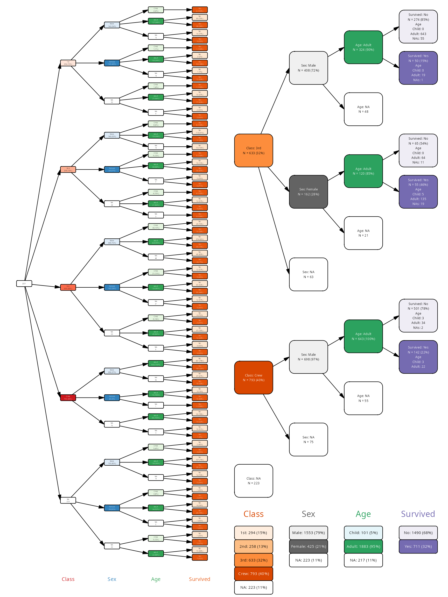
How do you…
Data pre-processing
Several options of the original vtree are actually for pre-processing of the data. For example, the variable specification ‘variable>value’ in the vtree mini-language is used to split a numeric variable into two levels.
I think that explicing splitting of the data before constructing the
vtree is more fittin. It is easy, and for complex cases there are many
specialized tools and packages dealing with that. For most cases, a
simple cut() or ifelse() is enough.
iris |>
mutate(Sepal.Length = ifelse(Sepal.Length > 5.5, "long", "short")) |>
mutate(Sepal.Width = cut(Sepal.Width, breaks = c(2, 3, 4, 5))) |>
vtree(Sepal.Length, Sepal.Width, Species) |>
plot()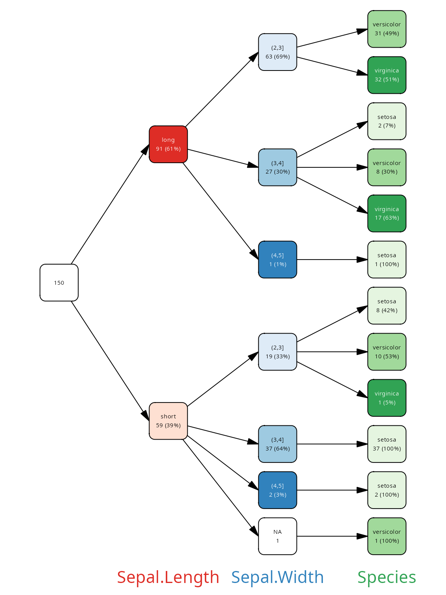
crosstabToCases. This vtree function
converts frequency tables to cases tables. The relevant
vtree2 function is cases_from_freqtable.
Compare:
# this is frequency table; the Freq column informs how many samples
# correspond to the given combination of levels
head(data.frame(Titanic))
#> Class Sex Age Survived Freq
#> 1 1st Male Child No 0
#> 2 2nd Male Child No 0
#> 3 3rd Male Child No 35
#> 4 Crew Male Child No 0
#> 5 1st Female Child No 0
#> 6 2nd Female Child No 0
nrow(data.frame(Titanic))
#> [1] 32
# this is cases: one row per sample
head(cases_from_freqtable(Titanic))
#> # A tibble: 6 × 4
#> Class Sex Age Survived
#> <fct> <fct> <fct> <fct>
#> 1 3rd Male Child No
#> 2 3rd Male Child No
#> 3 3rd Male Child No
#> 4 3rd Male Child No
#> 5 3rd Male Child No
#> 6 3rd Male Child No
nrow(cases_from_freqtable(Titanic))
#> [1] 2201
vt <- cases_from_freqtable(Titanic) |>
vtree(Class, Sex, Survived)There is a second function that combines
cases_from_freqtable and vtree:
vtree_from_freqtable(Titanic, Class, Sex, Survived) |>
plot()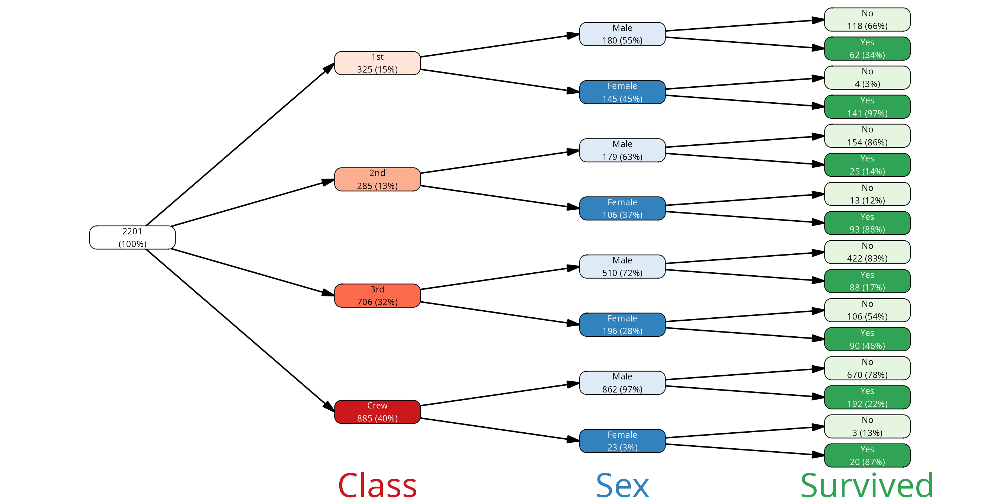
Pruning, keeping, finding, conditional operations
Pruning. In vtree2, you can prune the tree with the
prune() function. It takes a logical vector of length equal
to the number of nodes in the vtree object. You can use the variables in
from the vtree node data frame to construct the logical vector. For
example, to prune all nodes with frequency less than 0.15 or number of
cases less than 150, you can do
prune(vt, n < 150 | freq < .15). The result is always
a vtree which you can then plot.
The expression you pass to the prune() function, like
n < 150 | freq < .15, is evaluated in the context of
the vtree node data frame with added virtual columns for each of the
variables in the vtree. Each row of the context data frame corresponds
to a node in the vtree, so you can select all nodes which fullfill a
certain condition.
data(FakeData, package="vtree")
library(cowplot)
# vtree::vtree(FakeData, "Severity Sex")
p1 <- vtree(FakeData, Severity, Sex) |> plot()
#vtree::vtree(FakeData,"Severity Sex",
# prune=list(Severity=c("Mild","Moderate")))
p2 <- vtree(FakeData, Severity, Sex) |>
prune(Severity %in% c("Mild", "Moderate")) |>
plot()
plot_grid(p1, p2)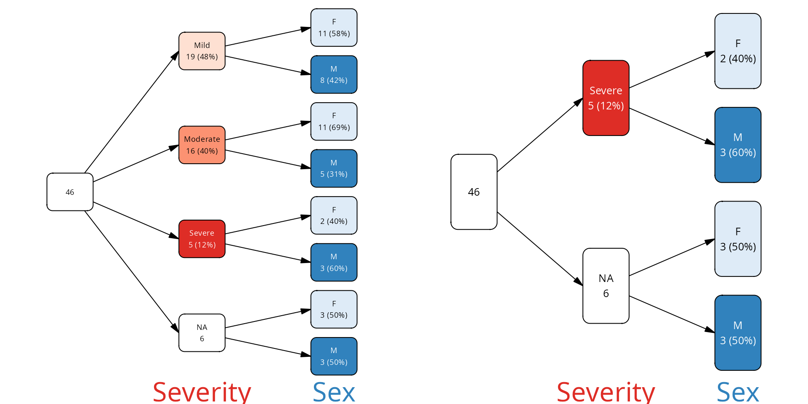
prunebelow
#vtree::vtree(FakeData, "Severity Sex",
# prunebelow=list(Severity=c("Mild","Moderate")))
vtree(FakeData, Severity, Sex) |>
prune(Severity %in% c("Mild", "Moderate"),
follow_only=TRUE) |>
plot()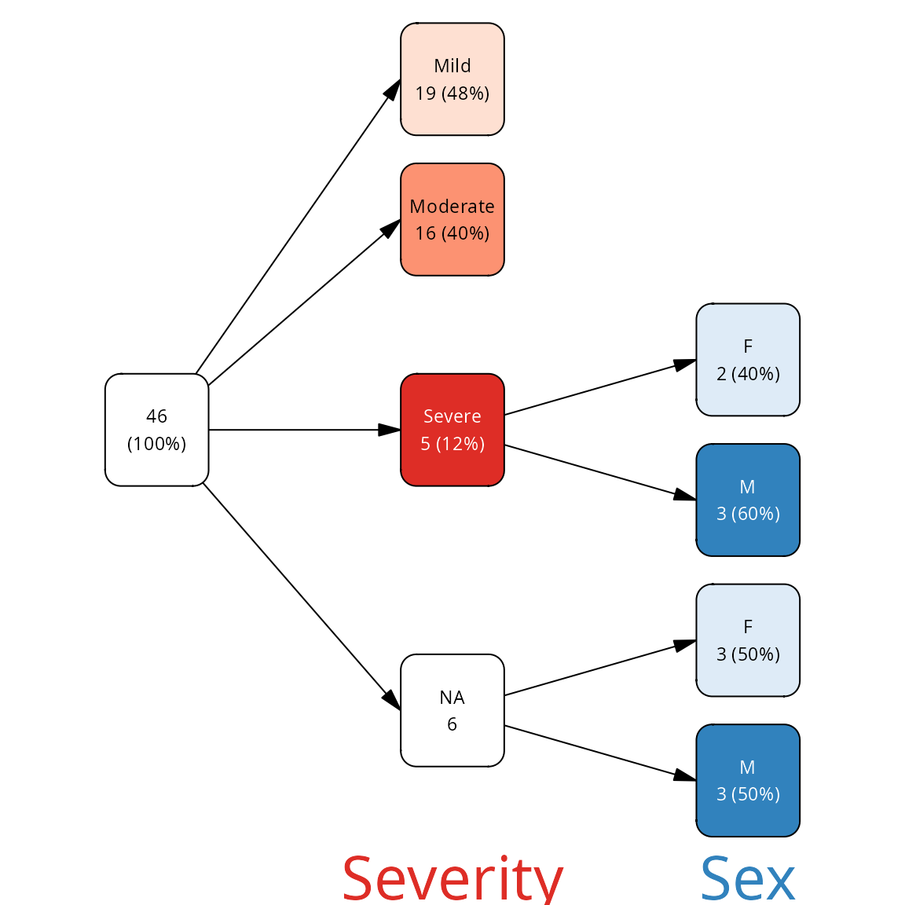
follow
The follow argument in the original vtree
means: prune all the nodes which follow nodes that do not
match a certain condition. So
follow=list(Severity=c("Mild","Moderate")) means: prune all
nodes below the nodes where Severity is not Mild or Moderate.
This is also done with the follow_only=TRUE argument in
prune(), except that we inverse the condition.
#vtree::vtree(FakeData, "Severity Sex",
# follow=list(Severity=c("Mild","Moderate")))
vtree(FakeData, Severity, Sex) |>
prune(!Severity %in% c("Mild", "Moderate"), follow_only = TRUE) |>
plot()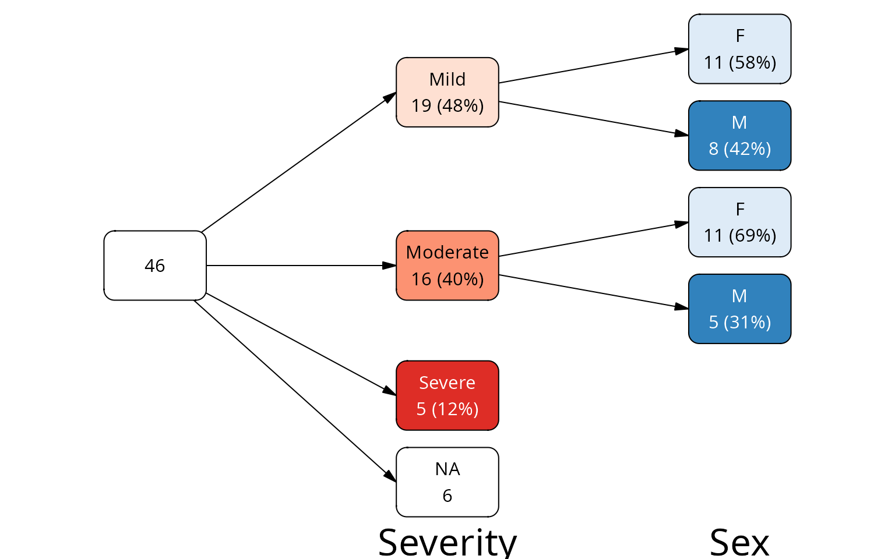
Targetted pruning. Since vtree2 accepts any expression creating a logical vector for pruning, specifying a targetted pruning is easy. Also, each node is associated with a path which is constructed from the path to the node, so this works:
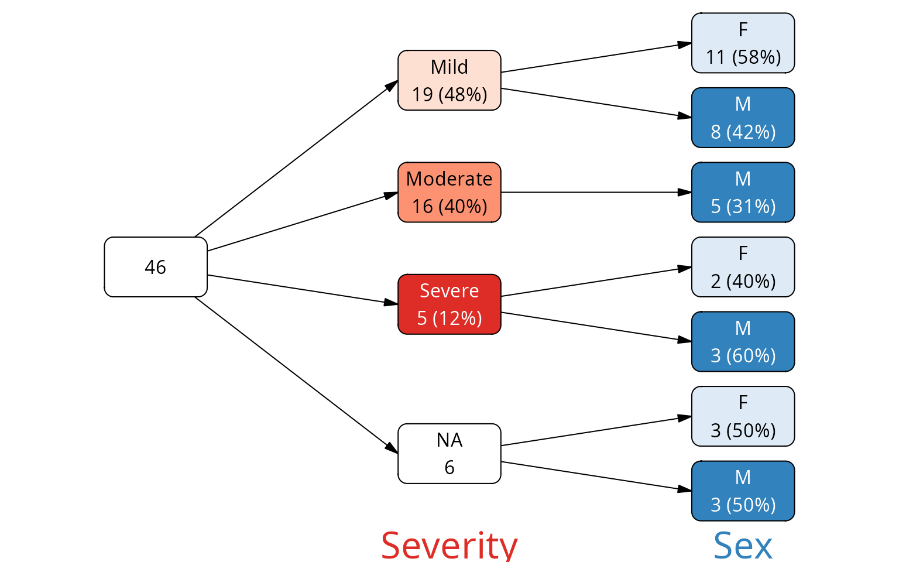
Keeping. The keep parameter in vtree is a bit peculiar, because it silently keeps also the nodes which are NA if the valid percentages are used. The rationale is this: without the NA node visible, you cannot know how many total samples were there, since frequencies are calculated from a denominator that excludes NA values.
Also, both the children and the parents of the
selected nodes are kept. In vtree2, the function is called
retain() to avoid clashes with
purrr::keep().
#vtree::vtree(FakeData, "Severity Sex",
# keep=list(Severity=c("Moderate")))
p1 <- vtree(FakeData, Severity, Sex) |>
retain(Severity == "Moderate") |>
plot(lheight=.2, lwidth=.4)
p2 <- vtree(FakeData, Severity, Sex) |>
retain(Severity == "Moderate", keep_follow = FALSE) |>
plot(lheight=.2, lwidth=.4)
plot_grid(p1, p2)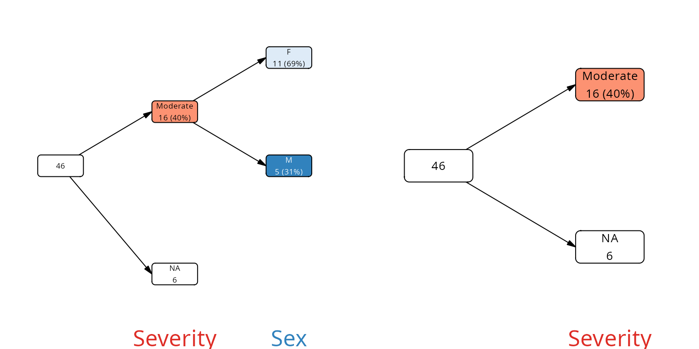
The behavior to keep the NA nodes is by default the same, i.e. keep
them if the vtree was constructed with valid percentages. You can
directly control this with the keep_na_sisters argument to
retain() or prune().
p1 <- vtree(FakeData, Severity, Sex) |>
retain(Severity == "Moderate") |>
plot(lheight=.2, lwidth=.4)
p2 <- vtree(FakeData, Severity, Sex) |>
retain(Severity == "Moderate", keep_na_sisters = FALSE) |>
plot(lheight=.2, lwidth=.4)
plot_grid(p1, p2)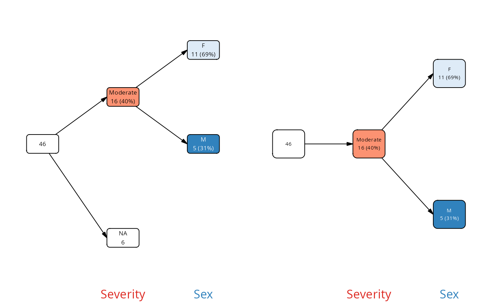
prunesmaller This is for selecting
nodes based on the number of observations. In vtree2, you can use any
column from the node data frame - including n, the number
of observations in the node, freq, the calculated
proportion, denominator etc etc.
#vtree::vtree(FakeData, "Severity Sex Age Category", prunesmaller = 3)
p1 <- FakeData |> mutate(Age = as.character(Age)) |>
vtree(Severity, Sex, Age, Category) |>
plot()
p2 <- FakeData |> mutate(Age = as.character(Age)) |>
vtree(Severity, Sex, Age, Category) |>
prune(n < 3) |>
plot()
plot_grid(p1, p2)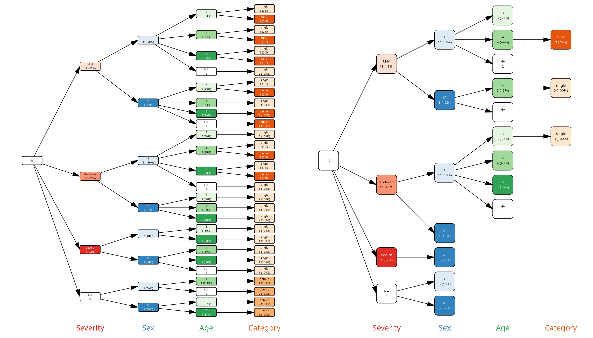
Formatting labels
In vtree2, there are some functions that construct automatic labels, but for any more complex case you can use standard R functions to construct your own labels.
By default, add_labels() construct the labels implicitly
when you call plot() on a vtree object. However, you can add the labels
yourself either with add_labels() (which is quite flexible)
or by directly modifying the label column in the vtree.
plot.vtree() will not overwrite labels if they already
exist.
For example, to mimick the sameline option in vtree, you
can first generate the standard automatic labels and then replace the
newline character with a space:
## vtree::vtree(FakeData, "Severity Sex", sameline = TRUE)
vtree(FakeData, Severity, Sex) |>
add_labels() |>
mutate(label = gsub("\n", " ", label)) |>
plot(lwidth = .9)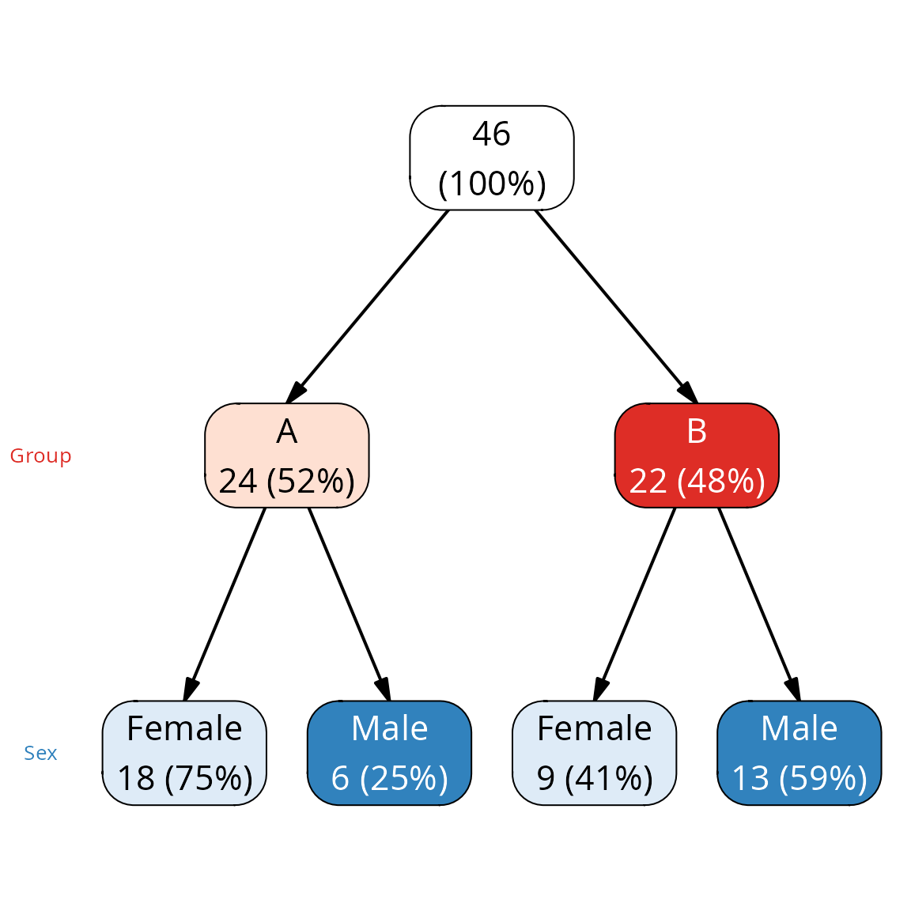
Arguably, that is way more code than just adding
sameline = TRUE to the vtree() call, but it is also way
more flexible.
labelnode. This is used in vtree to
replace a variable level with a custom label. In vtree2, the simplest
solution is to replace the variable levels in the data before
constructing the vtree.
## vtree::vtree(FakeData,"Group Sex",horiz=FALSE,
## labelnode=list(Sex=c(Male="M",Female="F")))
vt <- FakeData |>
mutate(Sex = dplyr::recode(Sex, M = "Male", F = "Female")) |>
vtree(Group, Sex)This has the advantage that your variable names are what you see on
the plot. Sometimes, however, we want to display something that is
cumbersome to work with code, e.g. a label containing Unicode
characters, formatting for richtext=TRUE or special
characters. For this, there is a function, add_aliases(),
which adds both variable name and variable value aliases.
## vtree::vtree(FakeData,"Group Sex",horiz=FALSE,
## labelnode=list(Sex=c(Male="M",Female="F")))
vtree(FakeData, Group, Sex) |>
add_aliases(val_alias = list(Sex = c(M = "Male", F = "Female"))) |>
plot(dir = "tb")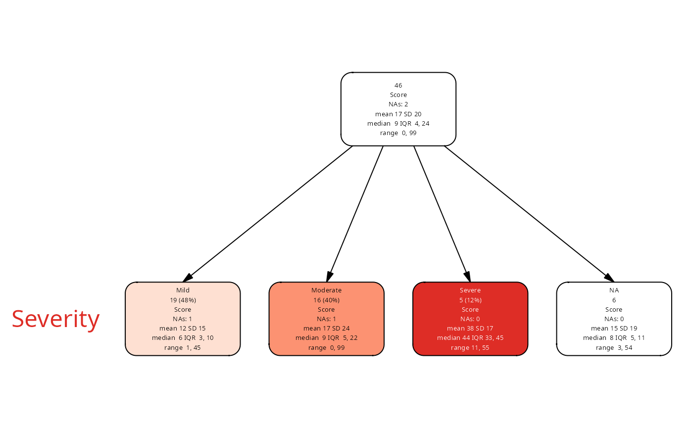
The argument col_alias does the same for variable names,
so you can change Sex to Gender or
Severity to Initial severity and so on.
How about changing M to Male and F to Female but only for the nodes
in group A? In vtree2, you need to manipulate the node labels. You can
construct the nodes from scratch, or use substitution to clean up nodes.
One of several ways of doing that is this: you find the nodes that are
below the node “Group:A”, and then substitute M with Male and F with
Female for these nodes only. You can use add_labels() with
the fmt argument:
vtree(FakeData, Group, Sex) |>
add_labels() |>
mark(path == "Group:A", follow_only = TRUE) |>
add_labels(fmt = ifelse(mark,
gsub("^F", "Female", label),
label)) |>
add_labels(fmt = ifelse(mark,
gsub("^M", "Male", label),
label)) |>
plot()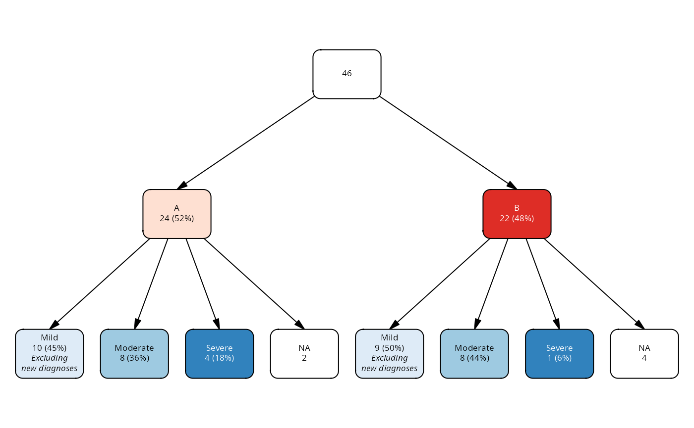
This is of course much more code, but is not only more flexible, but also less exotic. Once you get your head around the fact that you are using just R expressions to define conditions, it becomes quite easy.
text: the text argument in vtree allows to selectively add a text to the node. In vtree2, you manipulate the labels with an expression.
# vtree(FakeData,"Group Severity",horiz=FALSE,showvarnames=FALSE,
# text=list(Severity=c(Mild="\n*Excluding\nnew diagnoses*")))
vtree(FakeData, Group, Severity) |>
add_labels() |>
mark(Severity == "Mild") |>
add_labels(fmt = ifelse(mark,
paste0(label, "\n*Excluding\nnew diagnoses*"),
label)) |>
plot(dir = "tb",
richtext = TRUE,
legend_tiny = FALSE)ttext: same as above, except you use the
mark(path == "Group:B/Severity:Mild") to target the node of
your choice. See next section, “Targetting nodes”.
Targetting nodes
Prune / keep and labelling operation might want to target certain
nodes by their path. This is achieved in vtree using
tlabelnode. In vtree2, each node has an path,
a character representation of a path, and a path_l column
with the full path specified as list. You can use these to target nodes
for pruning, keeping, labelling or coloring. More: you can use your
prunning or keeping operation not to actually remove the nodes, but to
just select them for further operations. Thus, you can find a node path,
use prune to find all nodes that would be removed, and then
color them in red.
data(titanicNA)
vt <- vtree(titanicNA, Class, Sex, Survived)
vt |> retain(path == "Class:1st/Sex:NA/Survived:Yes" |
path == "Class:2nd/Sex:NA/Survived:Yes") |>
# btw: lheight and lwidth as fractions of the available space
plot(lheight=.3, lwidth=.4)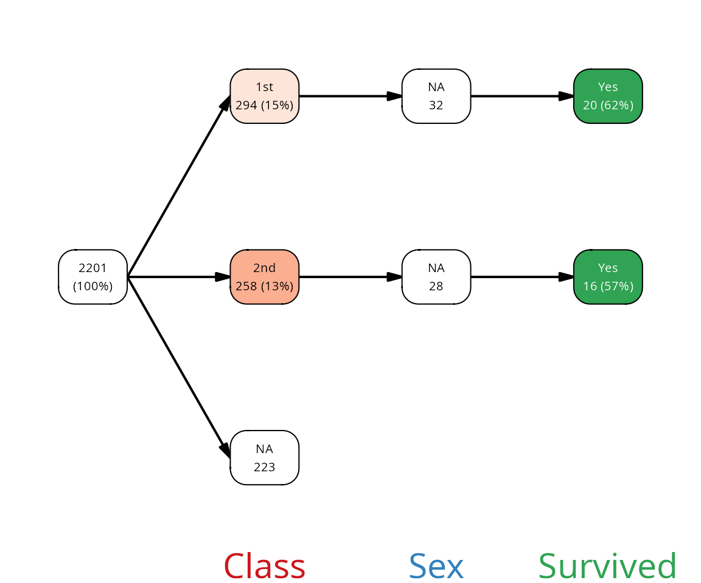
p1 <- vt |> add_labels() |>
mutate(label = ifelse(path == "Class:1st", "First class", label)) |>
mutate(fill = ifelse(path == "Class:1st", "red", "white")) |>
plot()
# mark the nodes to prune in red
p2 <- vt |> prune(path == "Class:2nd/Sex:NA", mark_only=TRUE) |>
mutate(fill = ifelse(!mark, "white", "red")) |>
plot()
plot_grid(p1, p2)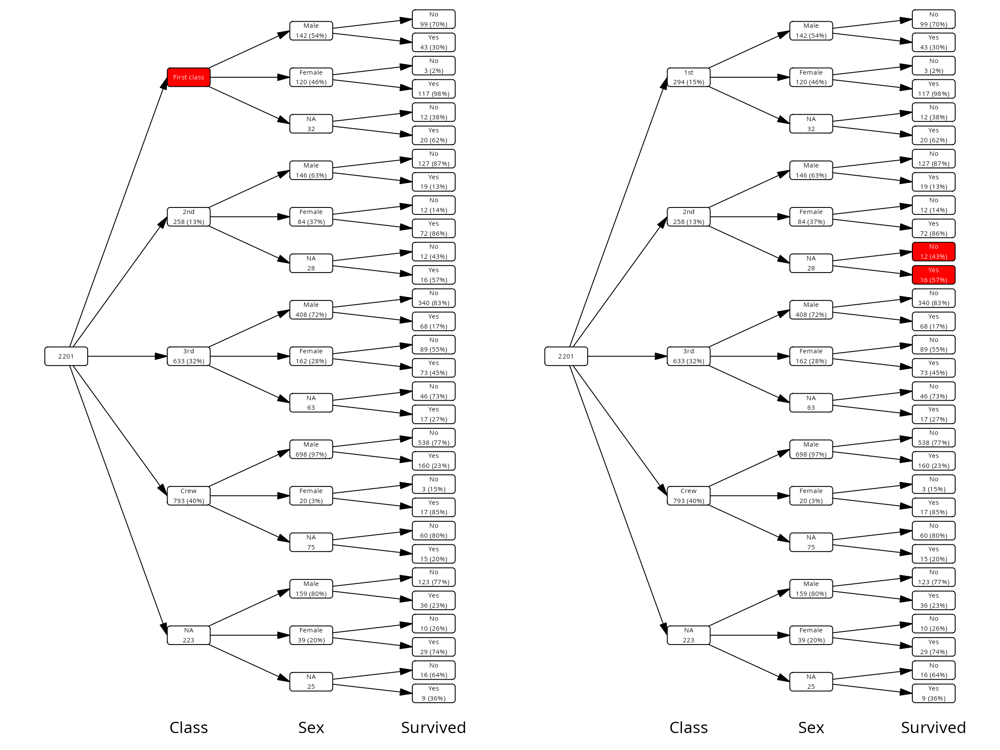
Summaries
More complex summaries can be achieved with
summary_vt(). This function takes a cases data frame as the
first argument and a vtree - a vtree object only keeps track of the
variables that were assigned from start and ignores other columns in the
cases data frame. However, with summary_vt() it is possible
to generate summaries for any other variables. For example:
## vtree(FakeData, "Severity", summary="Score", horiz=FALSE)
vt <- vtree(FakeData, Severity)
# first, prep the summary
sum_labs <- summary_vt(FakeData, vt, Score)
# add standard labels
vt |> add_labels() |>
mutate(label = paste0(label, "\n", sum_labs)) |>
plot(dir = "tb", lwidth=.8)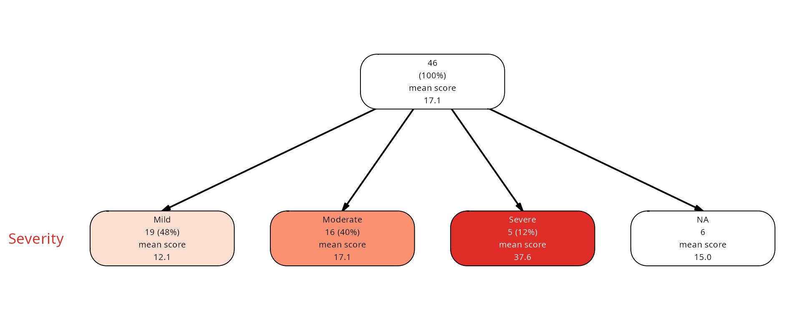
There is also a summary_at_var() function which
generates per-variable summaries from a vtree, which can also be used in
a plot.
vt <- vtree(FakeData, Category)
summary_at_var(vt, "Category", as_df=TRUE)
#> # A tibble: 4 × 6
#> node_col node_val count freq denom label
#> <chr> <chr> <int> <dbl> <int> <chr>
#> 1 Category single 26 0.565 46 single: 26 (57%)
#> 2 Category double 6 0.130 46 double: 6 (13%)
#> 3 Category triple 14 0.304 46 triple: 14 (30%)
#> 4 Category NA 0 0 46 Missing: 0In vtree, it is also possible, with a shorthand
notation, to get summaries for variables only for a given category. In
vtree2, it is possible, but requires a bit of coding:
## vtree(FakeData,"Severity",summary="Category=single",horiz=FALSE)
vt <- vtree(FakeData, Severity)
library(dplyr)
#>
#> Attaching package: 'dplyr'
#> The following objects are masked from 'package:stats':
#>
#> filter, lag
#> The following objects are masked from 'package:base':
#>
#> intersect, setdiff, setequal, union
library(purrr)
# this gives us, in the levels column, the counts
smvt <- summary_vt_df(FakeData, vt, Category) |>
mutate(single = map_int(levels, ~ .x["single"])) |>
mutate(single_freq = single / n) |>
mutate(label = sprintf("Category=single: %d (%.0f%%)",
single, 100 * single_freq))
vt |> add_labels() |>
mutate(label = paste0(label, "\n", smvt$label)) |>
plot(dir = "tb")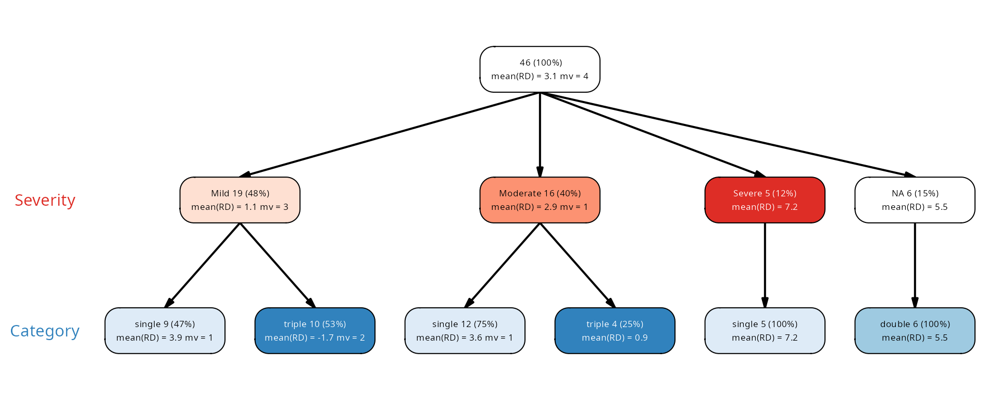
I agree, this is way more complicated, but then also way more
verbose. In a way the code above, with some modifications, replaces all
the other summary-related options in vtree.
For example, the vtree mini-language has also a number
of “control codes” for selecting nodes for which summaries should be
generated, e.g. for variable manipulation, such as %noroot%
(all nodes except for the root), %leafonly%,
%var=v%, %node=n%. All this can be achieved in
a rather (I think) natural way in vtree2 using conditions
passed to functions such as find_nodes() or
mark(), which can then be used to selectively add summaries
to the nodes.
Similarly, the different summary formatting options and codes in the vtree mini-language are replaced directly by R expressions.
## vtree(FakeData,"Severity",summary="Score \nmean score\n%mean%",sameline=TRUE,horiz=FALSE)
vt <- vtree(FakeData, Severity)
smvt <- summary_vt(FakeData, vt, Score, fmt = sprintf("mean score\n%.1f",
mean))
vt |> add_labels() |>
mutate(label = paste0(label, "\n", smvt)) |>
plot(dir = "tb")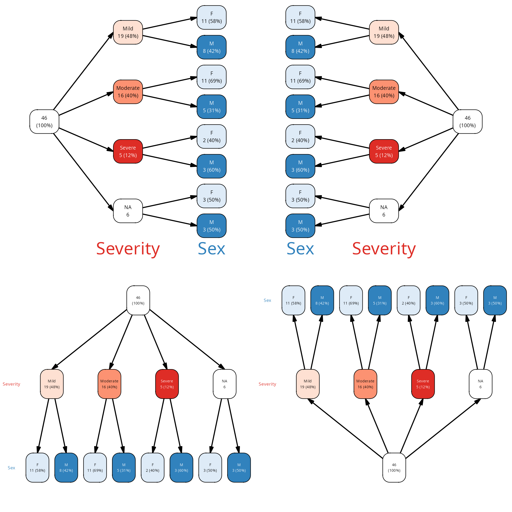
To get the missing value information as well but only if missing
values are present, we need a more complex approach. In the example
below, I will use summary_vt_df (returning a data frame)
and glue instead of sprintf:
library(glue)
smvt <- summary_vt_df(FakeData, vt, Score) |>
mutate(label = ifelse(missing > 0,
glue("mean score\n{round(mean, 1)} mv = {missing}"),
glue("mean score\n{round(mean, 1)}")))
vt |> add_labels() |>
mutate(label = paste0(label, "\n", smvt$label)) |>
plot(dir = "tb")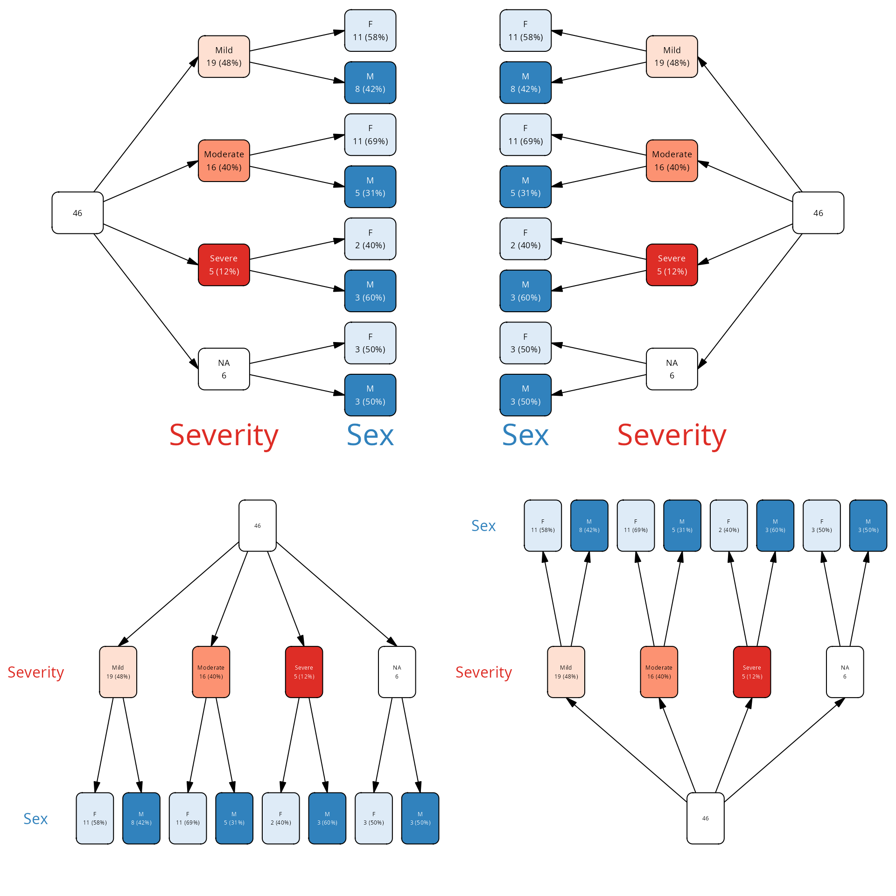
R expressions. In the vtree mini-language it is
possible to include some R code to make ad hoc calcuations. In
vtree2, this stage is separated from vtree construction -
if you want an additional variable, then by all means, create it
explicitely:
## vtree(FakeData,"Severity Category",
## summary="(Post-Pre)/Pre \nmean = %mean%",sameline=TRUE,horiz=FALSE,cdigits=1)
library(glue)
vt <- vtree(FakeData, Severity, Category)
smvt <- FakeData |>
mutate(RelDiff = (Post - Pre)/Pre) |>
summary_vt_df(vt, RelDiff) |>
mutate(label = ifelse(missing > 0,
glue("mean(RD) = {round(mean, 1)} mv = {missing}"),
glue("mean(RD) = {round(mean, 1)}")))
vt |>
add_labels(fmt = glue("{node_val} {n} ({round(100 * freq)}%)")) |>
#mutate(label = gsub("\n", ", ", label)) |>
mutate(label = paste0(label, "\n", smvt$label)) |>
plot(dir = "tb")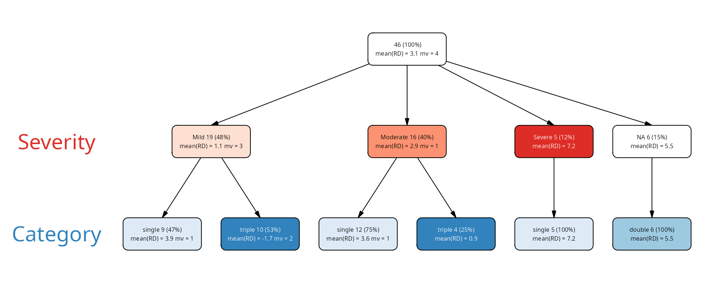
Plotting
The horiz=TRUE option in vtree directs
whether the tree is plotted horizontally or vertically. In vtree2, you
can specify the direction of the plot with the dir
parameter in plot(). The default is “lr” (left to right),
but you can also use “tb”, “bt”, or “rl”.
vt <- vtree(FakeData, Severity, Sex)
p1 <- plot(vt)
p2 <- plot(vt, dir="rl")
p3 <- plot(vt, dir="tb")
p4 <- plot(vt, dir="bt")
plot_grid(p1, p2, p3, p4, ncol=2)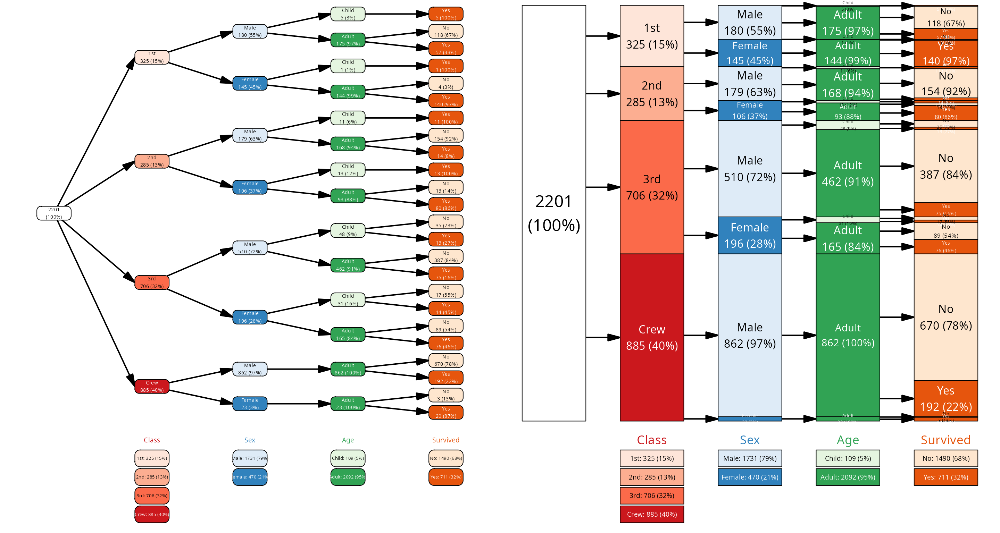
Changing variable labels. In vtree, you can specify
alternative variable labels with the labelvar parameter. In
vtree2 you can use the column labels you wish to see in the original
data. If you have weird characters (like spaces or newlines), use the
backticks.
## vtree::vtree(FakeData, "Severity Sex",
## horiz = FALSE,
## labelvar=c(Severity="Initial severity"))
FakeData |>
dplyr::rename(`Initial\nseverity` = Severity) |>
vtree(`Initial\nseverity`, Sex) |>
plot(dir = "tb", margins=c(0, 0, 0, .2))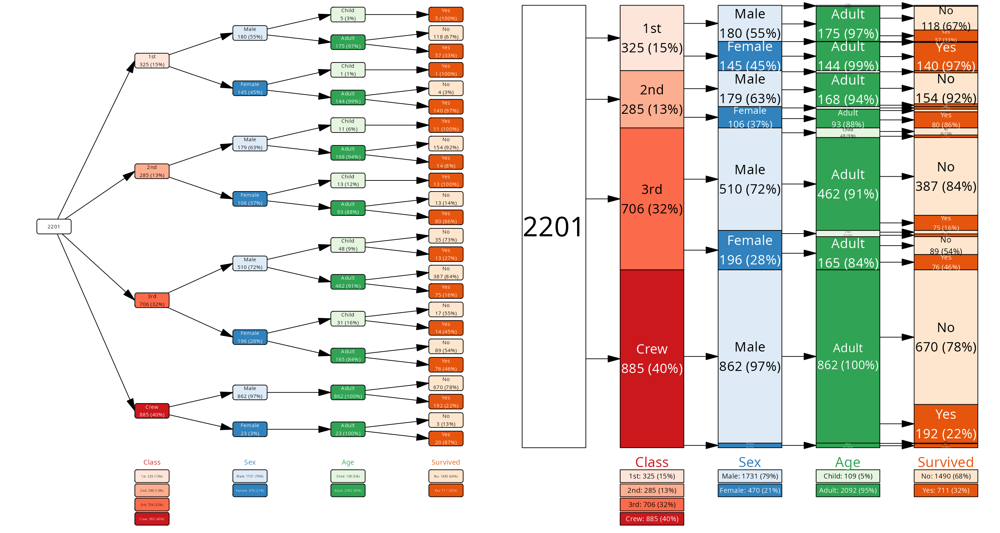
This has the advantage that if you use variable names in the node labels, they will show correctly.
There is also another possibility: as mentioned above, with the
add_aliases() function you can add also alternative names
for the variables:
vtree(FakeData, Severity, Sex) |>
add_aliases(col_alias = list(Severity = "Initial\nSeverity")) |>
plot(dir = "tb", margins=c(0, 0, 0, .2))Legends. The showlegend=TRUE argument
from vtree is legend=TRUE in
vtree2. That works both for regular and proportional
plots:
vt <- vtree_from_freqtable(Titanic)
p1 <- plot(vt, legend=TRUE)
p2 <- plot(vt, legend=TRUE, layout = "proportional")
plot_grid(p1, p2)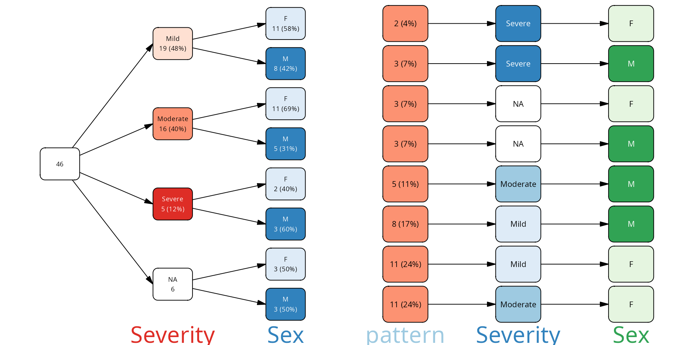
Patterns
The vtree patterns show all combinations of variable
levels in the data, one line at a time. They can be understood as all
possible paths through the tree. They are sorted by their frequency.
In vtree2, pattern are generated with the
pattern() function, which takes a vtree and returns a data
frame (tibble) with the vtree_pattern class. This data
frame is not sorted, but you can sort it yourself according to
needs:
# vtree(FakeData,"Severity Sex")
# vtree(FakeData,"Severity Sex",pattern=TRUE)
library(dplyr)
vt <- vtree(FakeData, Severity, Sex)
plot(vt)
pattern(vt) |> arrange(Sex_n) |>
plot(palettes = c("Blues", "Greens"))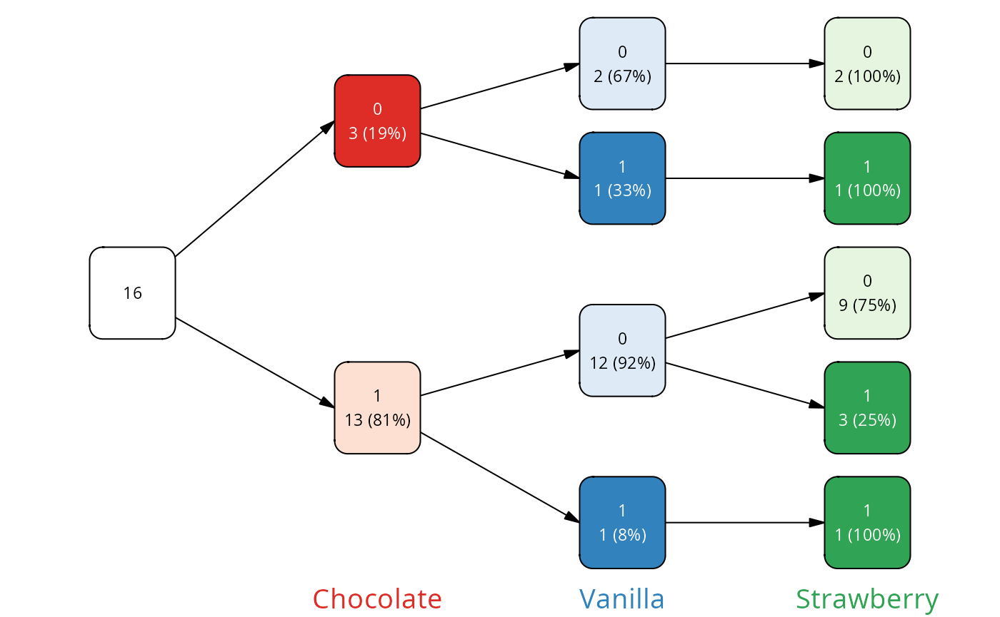
REDCap integration
In vtree, there is built-in functionality to read REDCap-encoded checkboxes. The problem is that REDCap checkboxes result in a flurry of variables with special attributes encoding levels.
dessert <- vtree::build.data.frame(
c( "group","IceCream___1","IceCream___2","IceCream___3"),
list("A", 1, 0, 0, 7),
list("A", 1, 0, 1, 2),
list("A", 0, 0, 0, 1),
list("A", 1, 1, 1, 1),
list("B", 1, 0, 1, 1),
list("B", 1, 0, 0, 2),
list("B", 0, 1, 1, 1),
list("B", 0, 0, 0, 1))
attr(dessert$IceCream___1,"label") <- "Ice cream (choice=Chocolate)"
attr(dessert$IceCream___2,"label") <- "Ice cream (choice=Vanilla)"
attr(dessert$IceCream___3,"label") <- "Ice cream (choice=Strawberry)"What vtree essentially does is to rename the variables from
IceCream___1 to Chocolate etc. There is no
vtree2 function to do that, but it is easy enough to write one which
renames the variables based on the REDCap attributes:
rewrite_redcap <- function(df, ident) {
cols <- startsWith(colnames(df), ident)
fnc <- \(x) {
nn <- attr(df[[x]], "label")
pat <- ".* \\(choice=(.*)\\)"
nn <- gsub(pat, "\\1", nn)
nn
}
newnames <- vapply(colnames(df)[cols], fnc, character(1))
colnames(df)[cols] <- newnames
df
}
rewrite_redcap(dessert, "IceCream___") |>
mutate(across(everything(), as.character)) |>
vtree(Chocolate, Vanilla, Strawberry) |>
plot()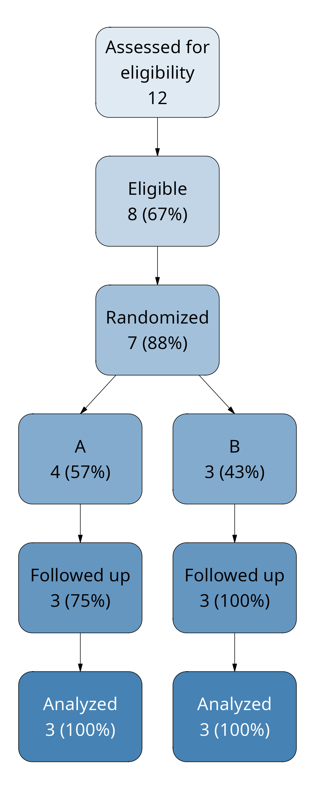
The various vtree prefixes (rnone:, ri:
etc.) can be handled in a similar way.
Generating cases data frames with
build.data.frame()
In general, in vtree2 you use the
cases_from_freqtable() function to convert a frequency
table to a cases table. The frequency table can be built with anything
that constructs a data frame. For example, to follow the code from the
dogs example in the vtree vignette, you can do this:
# build.data.frame(
# c("pet","breed","size"),
# list("dog","golden retriever","large",5),
# list("cat","tabby","small",2),
# list("dog","Dalmation","various",101),
# list("cat","Abyssinian","small",5),
# list("cat","Abyssinian","large",22),
tibble::tribble(
~pet, ~breed, ~size, ~Freq,
"dog","golden retriever","large",5,
"cat","tabby","small",2,
"dog","Dalmation","various",101,
"cat","Abyssinian","small",5,
"cat","Abyssinian","large",22,
"cat","tabby","large",86) |>
cases_from_freqtable()
#> # A tibble: 221 × 3
#> pet breed size
#> <chr> <chr> <chr>
#> 1 dog golden retriever large
#> 2 dog golden retriever large
#> 3 dog golden retriever large
#> 4 dog golden retriever large
#> 5 dog golden retriever large
#> 6 cat tabby small
#> 7 cat tabby small
#> 8 dog Dalmation various
#> 9 dog Dalmation various
#> 10 dog Dalmation various
#> # ℹ 211 more rowsThe FakeRCT examples
# vtree(FakeRCT,"eligible randomized group followup analyzed",plain=TRUE,
# keep=list(eligible="Eligible",randomized="Randomized",followup="Followed up"),
# horiz=FALSE,showvarnames=FALSE,title="Assessed for eligibility")
data(FakeRCT, package="vtree")
pal <- colorRampPalette(c("white", "steelblue"))(7)
vt <- vtree(FakeRCT, eligible, randomized, group, followup, analyzed)
vt |>
retain(followup == "Followed up") |>
add_labels() |>
add_labels(fmt = ifelse(path == "root",
paste0("Assessed for\neligibility\n", label),
label)) |>
mutate(fill = pal[level + 2]) |>
plot(dir = "tb", legend_tiny = FALSE, lwidth=.8, lheight=.7)
# vtree(FakeRCT,"eligible randomized group followup analyzed",plain=TRUE,
# follow=list(eligible="Eligible",randomized="Randomized",followup="Followed up"),
# horiz=FALSE,showvarnames=FALSE,title="Assessed for eligibility")
vt |>
prune(followup != "Followed up" |
randomized != "Randomized" |
eligible != "Eligible", follow_only = TRUE) |>
add_labels() |>
add_labels(fmt = ifelse(path == "root",
paste0("Assessed for\neligibility\n", label),
label)) |>
mutate(fill = pal[level + 2]) |>
plot(dir = "tb", legend_tiny = FALSE, lwidth=.8, lheight=.7)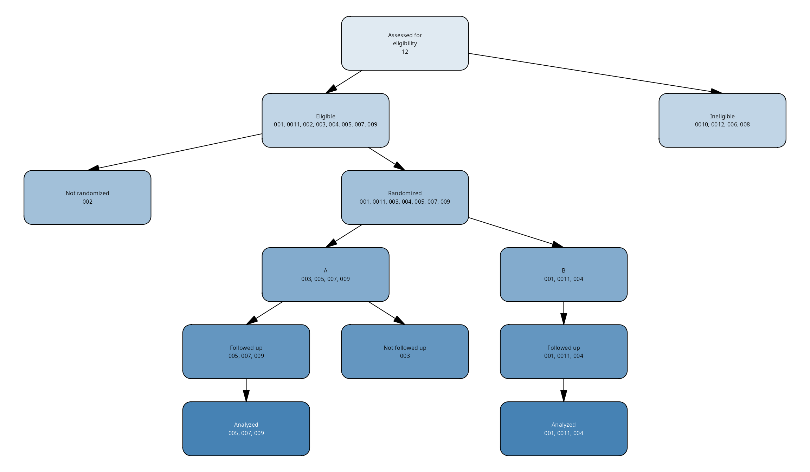
# vtree(FakeRCT,"eligible randomized group followup analyzed",plain=TRUE,
# follow=list(eligible="Eligible",randomized="Randomized",followup="Followed up"),
# horiz=FALSE,showvarnames=FALSE,title="Assessed for eligibility",
# summary="id \nid: %list% %noroot%")
# vtree:vtree() minilanguage allows to insert lists of identifiers
# we can do that manually
sumfnc <- function(df) {
ret <- paste("id:", paste(df$id, collapse = ", "))
# vtree::vtree() wraps text automatically, we do it explicitly
ret <- strwrap(ret, 20)
ret <- paste(ret, collapse = "\n")
ret
}
ids_summary <- vtree_apply(FakeRCT, vt, sumfnc) |>
unlist()
vt |>
prune(followup != "Followed up" |
randomized != "Randomized" |
eligible != "Eligible", follow_only = TRUE) |>
add_labels() |>
add_labels(fmt = ifelse(path == "root",
paste0("Assessed for\neligibility\n", label),
paste0(label, "\n", ids_summary[node_key]))) |>
mutate(fill = pal[level + 2]) |>
plot(dir = "tb", legend_tiny = FALSE, lwidth=.8, lheight=.7)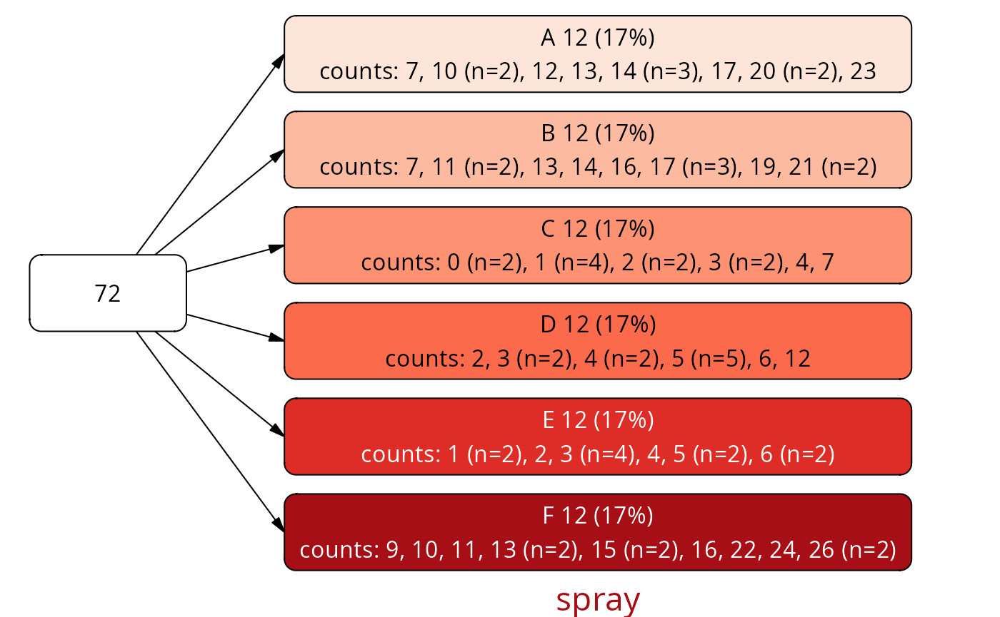
New functionality Killer features
- frequency plots: where nodes are scaled by the number of observations
- inserting other graphical objects into nodes: images or ggplot2’s
- pruning or keeping nodes takes any logical expression
Missing functionality
The following are not yet implemented in vtree2:
-
font styling<- done! the richtext=TRUE parameter to plot() - the various variable processing options, like turning a numeric variable into a factor with a specified number of levels - I think they are better left to whatever the user is most comfortable with.
-
a fundamental problem of vtree2 concept is that the original data is not kept with the vtree object (maybe I should change that?). That is why the legend produced by vtree2 is different when the tree is pruned: the legend is based on the current, pruned vtree and not on the original data. For now, I will just keep the original summaries.-> now the summaries are kept so the legend is always the same. - the summary expressions in the original vtree package are very
powerful. While most of what can be done in
vtreecan also be achieved invtree2, it requires a few more lines of code. Maybe some shortcuts are in order.
Design principles for vtree2
- separate frequency calculations, summary calculations, node selection and plotting
- use graphical objects for plotting which are flexible
- use tidyverse principles for data manipulation
- use tidyverse syntax for specifying variables
- vtree object inherits from tidygraph’s tbl_graph, so it can be used with a wide variety of plotting tools, including ggraph, ggplot2, and plotly
Practical differences
- In vtree2, you first prepare the data with
vtree()and then plot it withplot(). This means one more function call, but a much more flexible plotting system. - Given that a vtree object is a tbl_graph, you are not limited to the built-in plotting functions. You can use ggraph, ggplot2, or plotly to create your own plots.
- There are some automatic summary and plotting functions, but you can
also have a very tight control about the labels by modifying the
labelcolumn in the vtree object. - The summary_vt function can be used to calculate summary statistics for each node based on any additional data. It is not limited to using the data from which the vtree was constructed, and you can use the exposed statistics to shape any label you would like.
- Same goes for colors: instead of using automatic color assignments
that mimick these of the original vtree, you can use any color scheme
you like by assigning values to the
colorcolumn in the vtree object. - The downside of this setup is that the original vtree allows you to generate a beautiful plot with a single terse function call, whereas vtree2 is much more explicit and requires several steps. The upside is that you have more flexibility and more control over the final plot.
- The geometry of the plot is chosen by the original vtree plotting function, whereas in vtree2 the geometry depends on the device, and the plot is adjusted to fill the available space on the device, which means that the plots sometimes need fine tuning.
- The mini-language implemented in vtree is now replaced by explicit operations: finding nodes, labelling, selecting colors for plotting etc.